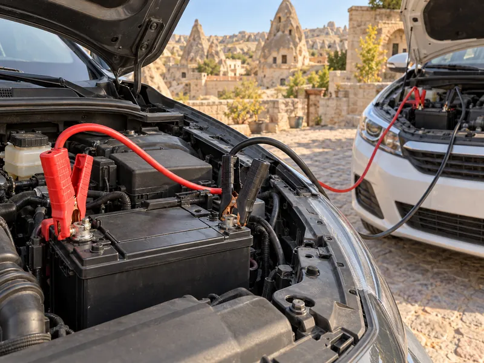

Araç TekniğiKonu 5 / 1076 çıkmış soru
Elektrik sistemi ve akü
Aracın elektrik ihtiyacını karşılayan akü ve şarj sistemini (alternatör, regülatör), motoru ilk harekete geçiren marş sistemini, sigortaları, aydınlatma ve sinyal lambalarını ve akü takviyesini anlatır.

1Konu anlatımı
Akılda kalsın
- Akünün elektrolit seviyesi azalmışsa saf su eklenir; kutup başlarındaki oksit temizlenir.
- Akü sökülürken önce eksi (–) kutup kablosu sökülür; artı (+) kutup başı eksiden daha kalındır.
- Aracın elektriğini alternatör üretir; motor çalışırken şarj ikaz ışığı yanıyorsa arıza alternatörde (veya kayışında) olabilir.
- Marş motoru aküden aldığı akımla motora ilk hareketi verir; uzun ve sık marş aküyü boşaltır, marş motorunun ömrünü kısaltır.
- Sigorta aşırı akımda eriyerek devreyi keser; yanan sigorta aynı amperde yenisiyle değiştirilir ve çalışmayan bir alıcıda ilk sigortaya bakılır.
- Takviyede artı kutup artıya, eksi kutup eksiye bağlanır.
- Akü asidi göze, cilde veya boyalı yüzeye temas ederse ilk iş bol suyla yıkamaktır.
Akü
Akü, elektrik enerjisini kimyasal olarak depolar ve elektrikli sistemlerin ihtiyacını karşılar. En önemli görevi motorun ilk hareketi için marş motoruna elektrik vermektir. Motor çalışmazken alternatör elektrik üretmediğinden aydınlatma sistemi ve radyo gibi alıcıların ihtiyacını da akü karşılar. Akünün artı (+) kutup başı eksi (–) kutup başından daha kalındır; bu fark kabloların ters bağlanmasını önlemeye yardımcı olur.
Akü bakımı
- Bakım gerektiren akülerde elektrolit (asitli su) seviyesi kontrol edilir. Seviye azalmışsa saf (damıtık) su eklenir; elektrolitten buharlaşan yalnızca sudur, asit eklemek aküye zarar verir.
- Kutup başlarında oluşan oksit temizlenir ve bağlantılar sıkılır; oksit akım geçişini zayıflatır.
- Akünün üstü temiz ve kuru tutulur. Üstte biriken kir ve nem kutuplar arasında kaçak yolu oluşturur ve akü kendiliğinden boşalır. Elektrik sistemindeki bir kaçak da aynı sonucu doğurur.
- Bakım gerektirmeyen akülerde kontrol gözünün yeşil görünmesi şarjın iyi durumda olduğunu gösterir.
- Kışın donmaması için akünün tam şarjlı olmasına dikkat edilir; şarjı azalmış akünün elektroliti donabilir. Aküye antifriz konmaz.
Akü ile çalışırken güvenlik
- Akü sökülürken önce eksi (–) kablo sökülür, takılırken önce artı (+) bağlanır. Böylece anahtarın şasiye değmesiyle oluşabilecek kısa devre ve kıvılcım önlenir.
- İki kutup başına aynı anda metal bir parça değerse kısa devre olur; akü ısınır, kıvılcım çıkar ve patlayabilir.
- Kutup başları ters bağlanırsa alternatör diyotları yanar.
- Akü sülfürik asit içerir. Göze, cilde ya da metal veya boyalı yüzeylere temas ederse ilk yapılacak iş bol su ile yıkamaktır; tiner, antifriz veya fren hidroliği zararı artırır.
Şarj sistemi: alternatör ve regülatör
Alternatör, motorun önünde kayışla döndürülen ve araç için gerekli elektriği üreten parçadır. Motor çalışırken hem aküyü şarj eder hem de elektrikli donanımı besler. Regülatör, alternatörün ürettiği elektriğin voltajını ve şiddetini sınırlayarak akü ile alıcıları aşırı gerilimden korur. Regülatör arızalanırsa gerilim yükselir ve aydınlatma ampulleri sık sık patlar.
Kontak açıldığında akü şarj ikaz ışığı yanar, motor çalışınca sönmelidir. Motor çalıştığı hâlde yanıyorsa alternatör ya da kayışında arıza vardır ve akü şarj olmaz.
Marş sistemi
Motor kendi kendine çalışmaya başlayamaz. Marş motoru, aküden aldığı akımla volan dişlisini döndürerek motora ilk hareketi verir ve motor çalışınca devreden çıkar. Aracı hareket ettirmek ya da aküyü şarj etmek marş motorunun görevi değildir. Kontak anahtarı ise elektrik devresini açıp kapatır.
- Marş motoru çok yüksek akım çeker. Uzun süre ve sık marş yapmak aküyü boşaltır ve marş motorunu aşırı ısıtarak ömrünü kısaltır; marş kısa aralıklarla denenmelidir.
- Motor çalışırken marş yapılırsa marş dişlisi ve volan dişlileri zarar görür.
| Belirti | Muhtemel neden |
|---|---|
| Marş motoru yavaş dönüyor | Akünün şarjı yetersiz |
| Marş motoru hiç dönmüyor | Akü boşalmış |
| Marş çalışmıyor, farlar da yanmıyor | Akü kutup başları gevşemiş veya oksitlenmiş |
| Marş çalışmıyor ama korna çalışıyor | Marş motorunun kablo bağlantıları |
Sigortalar
Sigorta, devreden aşırı akım geçtiğinde ya da kısa devre oluştuğunda içindeki ince tel eriyerek devreyi keser; kabloları ve elektrikli donanımı yangından korur. Far, silecek, korna gibi bir elektrikli alıcı çalışmıyorsa ilk bakılacak yer sigorta kutusundaki ilgili sigortadır. Yanan sigorta aynı amperde yenisiyle değiştirilir: daha büyük amperli sigorta devreyi korumaz ve yangına yol açabilir, daha küçüğü ise sık sık atar.
Aydınlatma ve sinyal sistemi
| Lamba | Ne zaman yanar, ne bildirir? |
|---|---|
| Fren (stop) lambaları – kırmızı | Fren pedalına basılınca yanar; aracın yavaşladığını veya durduğunu bildirir. Pedala basıldığı hâlde yanmıyorsa fren müşiri arızalı olabilir. |
| Geri vites lambaları – beyaz | Geri vites takılınca yanar; arkadakileri geri manevradan haberdar eder. |
| Sinyal lambaları | Sağa veya sola dönüş ve şerit değiştirme niyetini önceden bildirir. |
| Acil uyarı (dörtlü ikaz) lambaları | Araç arızalanıp durmak veya mecburen park etmek zorunda kalındığında yakılır. |
- Sinyal verildiğinde göstergedeki sinyal ikaz ışığı çok sık yanıp sönüyorsa sinyal ampullerinden biri yanmıyordur.
- Aynı devredeki iki lambadan biri (örneğin bir far ya da bir geri vites lambası) sönük yanıyorsa o lambanın bağlantısında oksitlenme vardır.
- Far tamiri veya değişiminden sonra far ayarı yapılır; ayarsız far yolu iyi aydınlatmaz ya da karşıdaki sürücülerin gözünü kamaştırır.
- Flaşörleri yanık bırakılarak uzun süre park edilen aracın aküsü boşalır.
Takviye ile çalıştırma
Akü boşaldığında başka bir aracın aküsünden takviye kablosuyla yararlanılabilir. Bu sırada akülerin aynı kutupları birbirine bağlanır: artı kutup artıya, eksi kutup eksiye. Ters bağlantı kısa devreye, kıvılcıma ve elektrik sisteminin zarar görmesine yol açar.
2Bu konunun soruları
MEB sınavlarında bu konudan çıkmış 76 soru (18 tanesi en az üç sınavda soruldu). Her soruda doğru cevabı ve açıklamasını hemen görürsünüz.
Hangi sorular?
Sıralama